Lorton, VA
CFS Designs US played a key role in enhancing the facade of a building in Lorton, VA, by supplying and installing silver metallic ACM panels and the underlying rainscreen substructure.
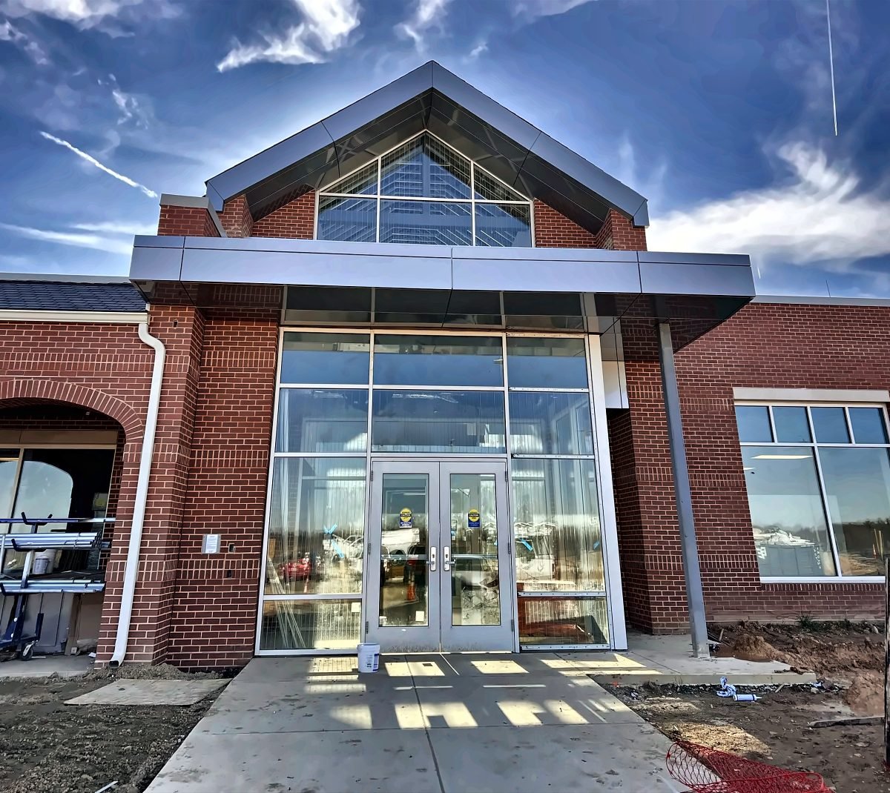
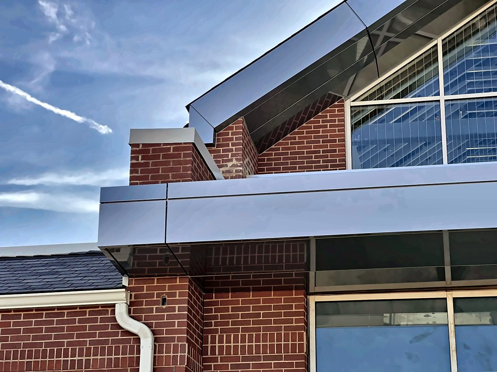
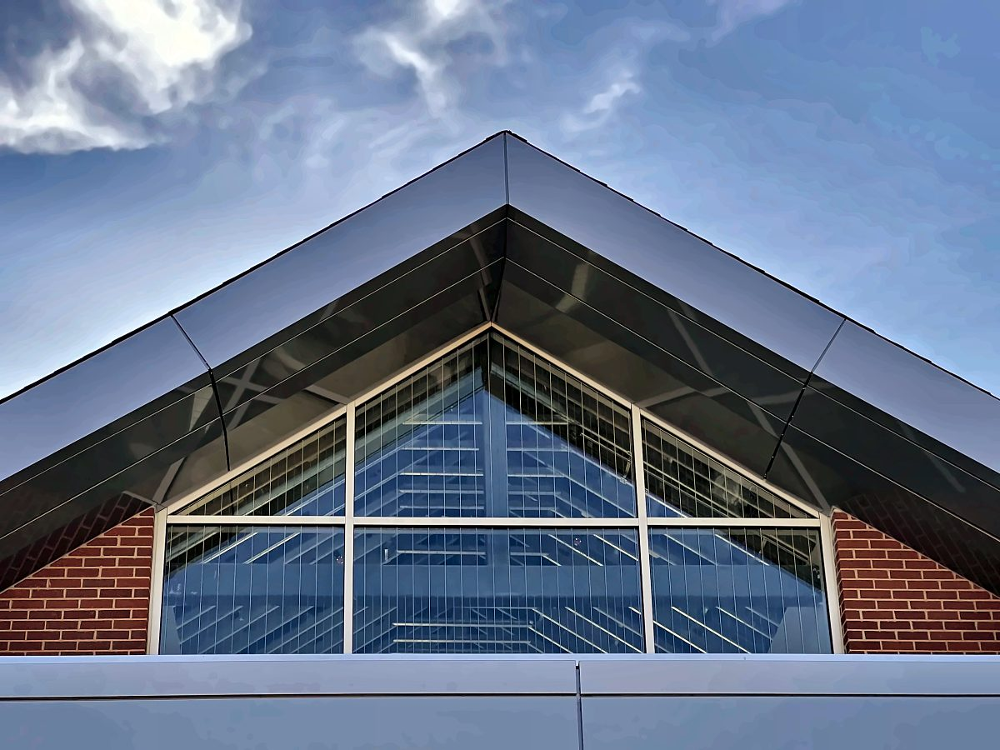
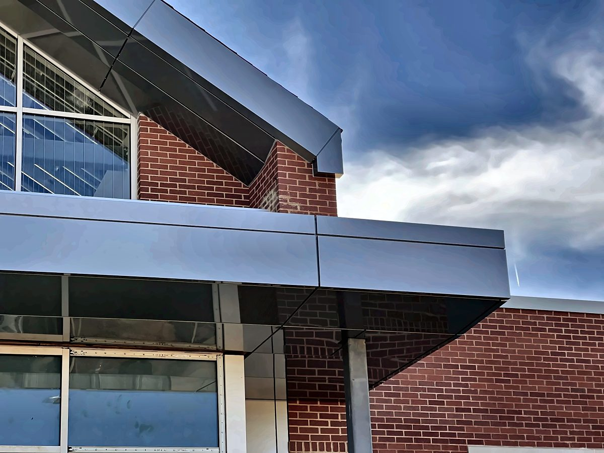
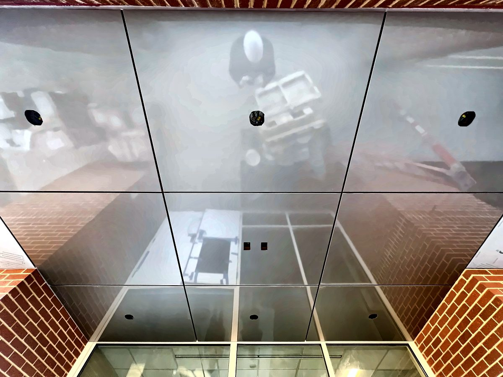
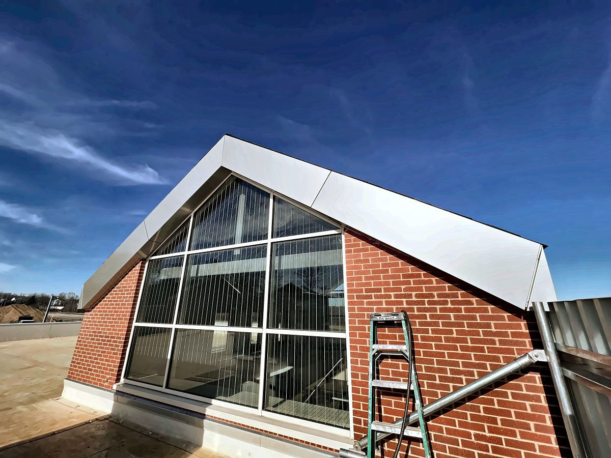
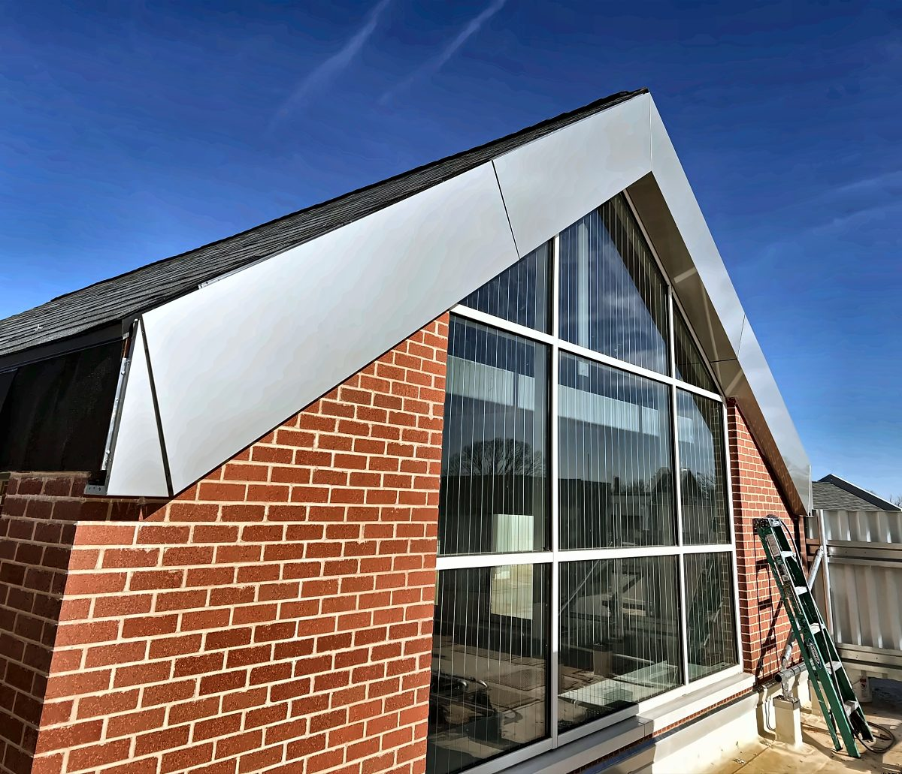
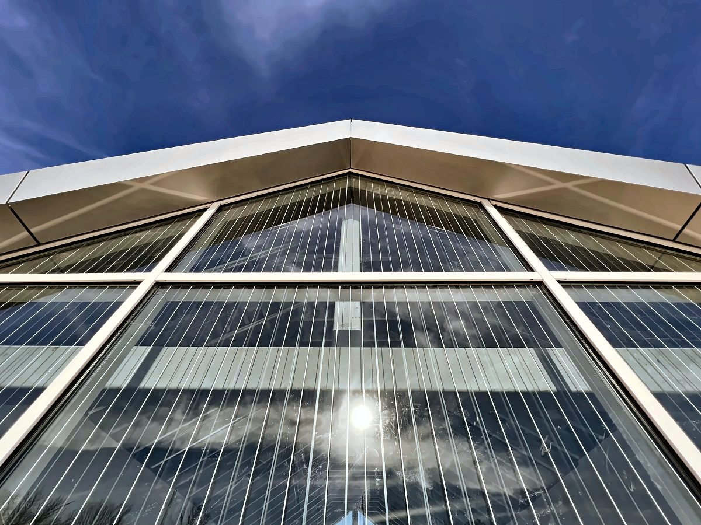
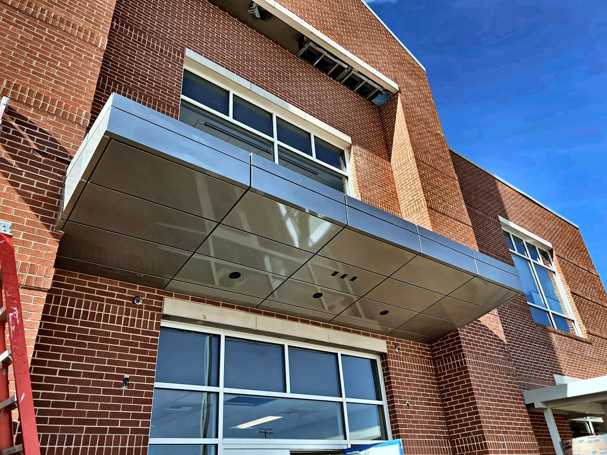
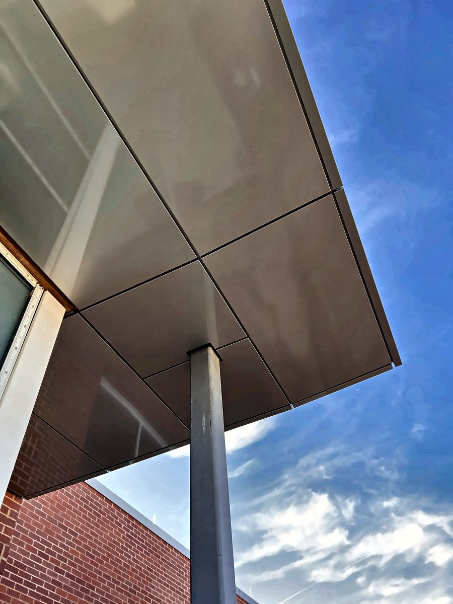
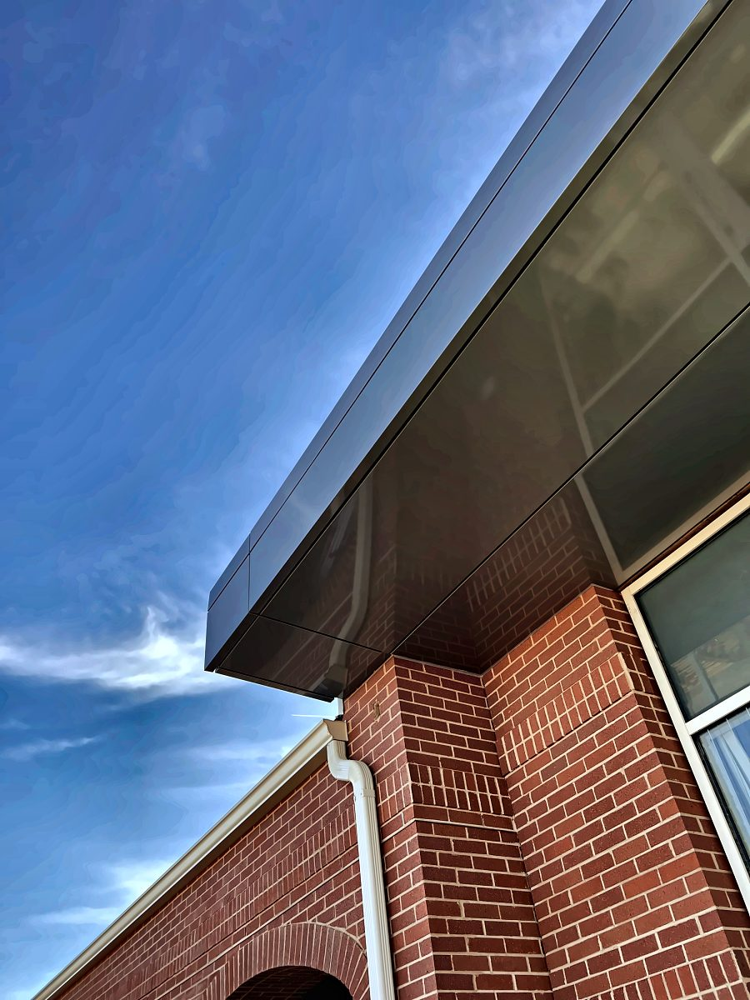